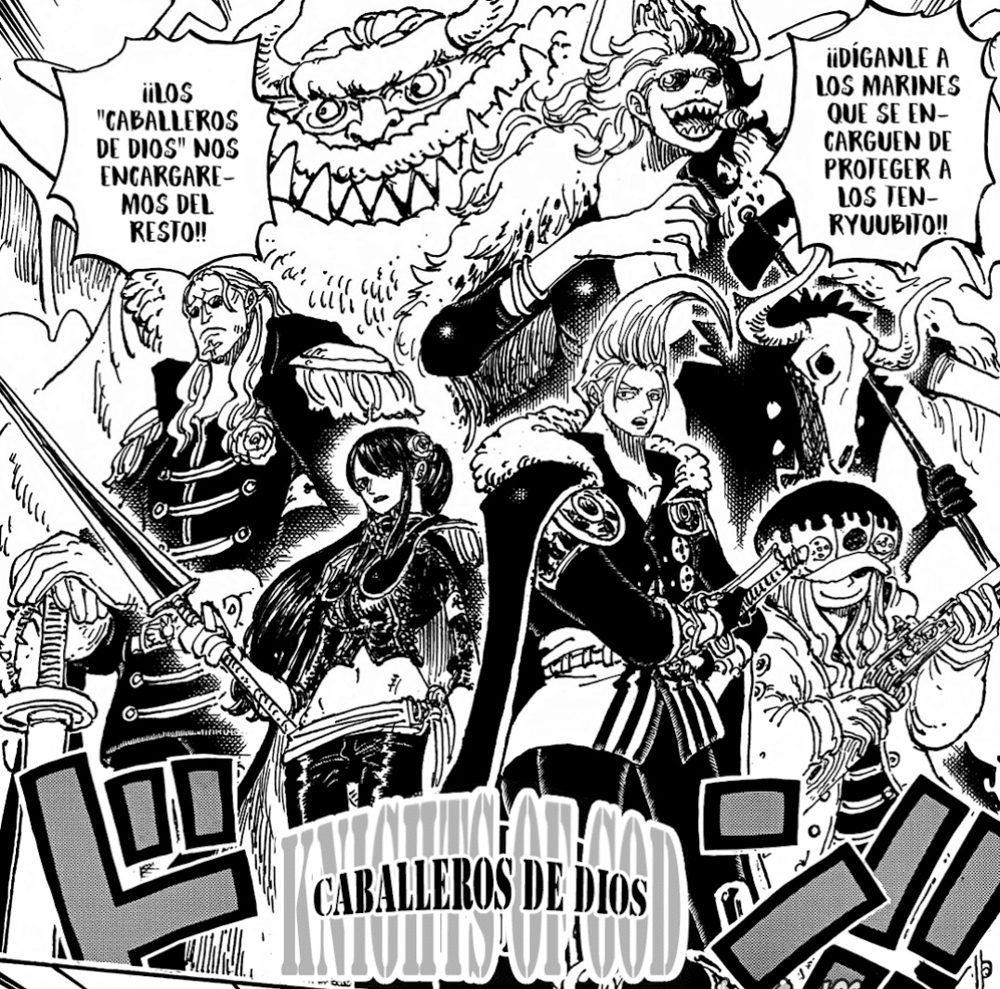

Sobre Mí

Buenas a todos, me llamo Sebastián, tengo 30 y soy del pueblo de Mejillones. Ingresé a este bootcamp para ampliar mi conocimiento respecto a informática. Me gustan las series de acción, la música como el rock o metal, y por último me gusta pasar tiempo con mis mascotas y salir con ellos.
Intereses
- Programación y Tecnología
- Videojuegos
- Música (Rock y metal, Old School Rap)
- Series
- Robótica
- One Piece
Mis 3 Artistas Favoritos
- Michael Jackson
- Jack Black
- Snoop Dogg
Tabla de Favoritos
| Categoría | Mis Favoritos | ||||
|---|---|---|---|---|---|
| Anime | One Piece | Dr.Stone | HunterxHunter | ||
| Música | Sonata Arctica | Tenacious D | Ice Cube | Cuarteto de Nos | Stratovarius |
| Series de Acción | The Mandalorian | Peacemaker | The Sopranos | ||
Canción Favorita actual (de las serie Peacemaker, Oh lord - Foxy Shazam)
Galería de Imágenes: Personajes de One Piece
